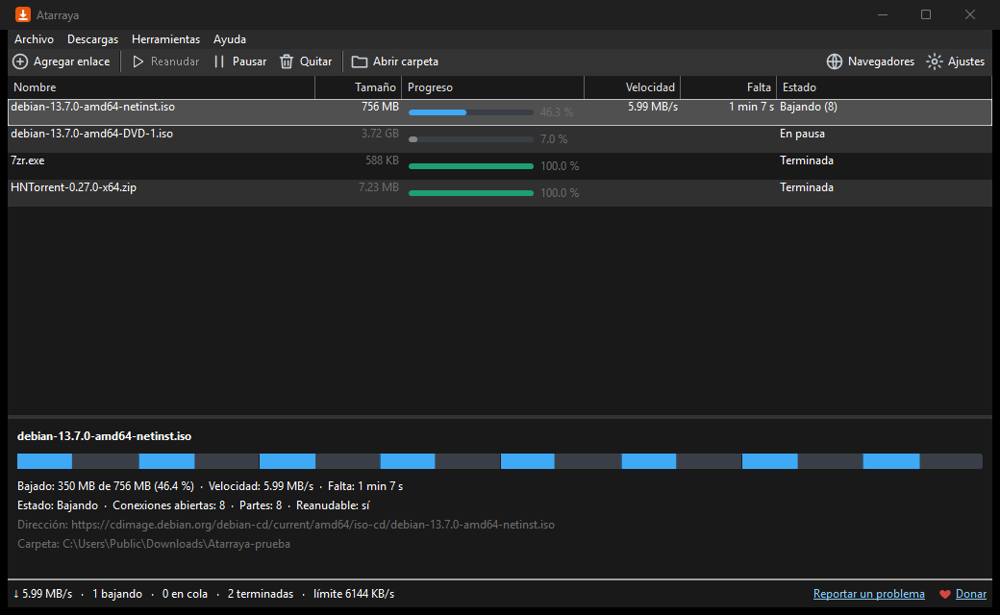

Atarraya
Gestor de descargas · Windows 10 y 11 (64 bits)
Como la atarraya que se lanza y atrapa muchos peces de una vez: baja cada archivo en varias partes a la vez, y las descargas de tu navegador también.
- Hasta 16 conexiones por archivo, más rápido que el navegador.
- Pausa y sigue después, aunque apagues la PC.
- Toma las descargas de Chrome, Edge y Brave, de cualquier sitio.
- Reintenta solo si se cae el internet. Límite de velocidad y cola.
Descomprime el .zip y abre Atarraya.exe. Código · Reportar un problema
